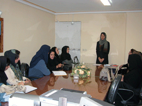
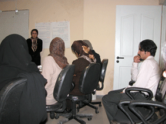
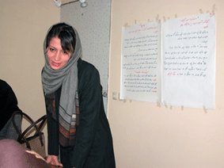
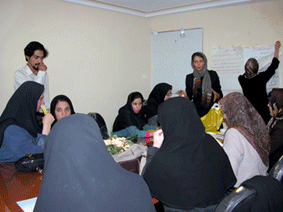
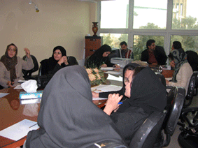
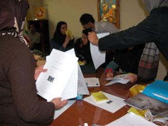
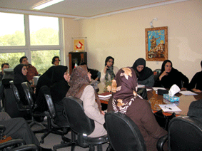
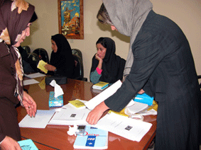

|
|

گزارش تصويري كارگاه آموزشي همدان:
همدان هم به كمپين پيوست
شنبه13 آبان 1385
با برگزاري كمپين يك ميليون امضا براي تغير قوانين تبعيض آميز در همدان، فعالان اين شهر نيز جمع آوري امضا براي اعتراض به قوانين نابرابر را آغاز كردند.
در اين كارگاه كه با شركت 15 نفر از زنان ومردان همداني برگزار شد، بر اساس روال معمول كارگاه هاي آموزشي، نابرابري هاي حقوقي، روشهاي كار چهره به چهره با مردم و اهداف و كليات طرح كمپين از سوي سارا لقماني و افروز مغوي براي داوطلبان همكاري با كمپين توضيح داده شد.
گزارش تصويري اين كارگاه را از دريچه دوربين راحله عسگري زاده مي بينيم:

بيشتر شركت كنندگان دركارگاه از معلم هاي همداني بودند.

تا يكساعت اول ،تنها مرد حاضردر كارگاه مهرداد حمزه (هماهنگ كننده كارگاه در همدان ) بود.

سارا پس از معرفي ، اهداف كمپين را براي حاضرين توضيح داد

افروز بحث هاي حقوقي را با مبحث ازدواج آغاز كرد و و در ادامه بحث طلاق
داوطلبان با دقت نابرابري هاي حقوقي را يادداشت مي كردند

در زمان در نظر گرفته شده براي استراحت هم همه در سالن ماندند و بحث و گفتگو درباره كمپين داغ داغ بود.

سارا نحوه پركردن برگه هاي جمع آوري امضا را توضيح مي دهد.

داوطلبين همدان كه ازگروه هاي سني مختلفي بودند با علاقمندي گوش مي دادند و گاهي هم از تجربه هايشان مي گفتند.

جزوه هاي آموزشي و برگه هاي جمع آوري بين داوطلبان پخش مي شود.